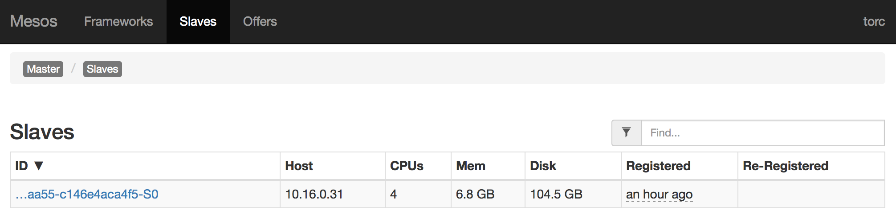
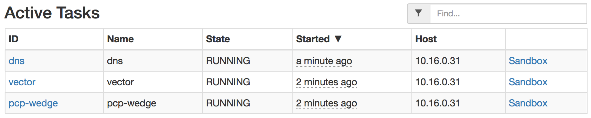
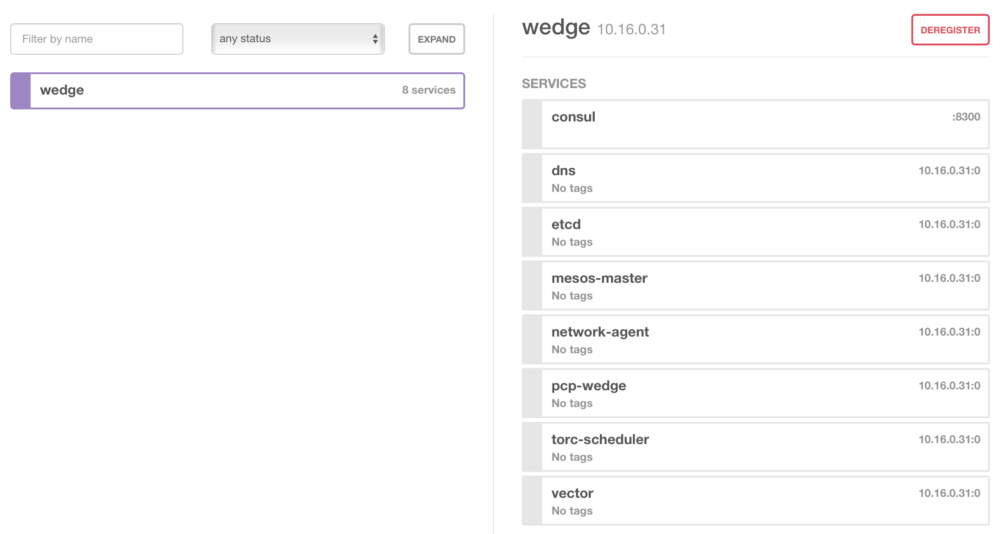
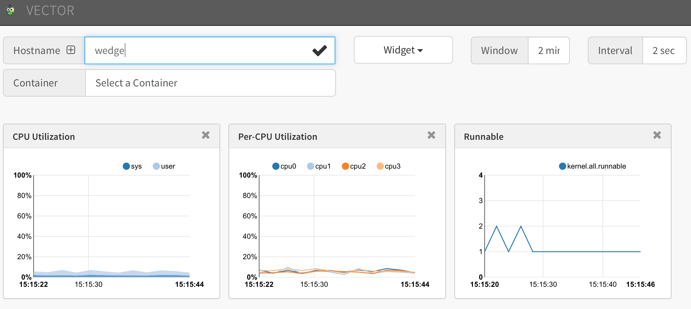

Install ToRC Core
Build Docker Containers
1. Clone torc-scripts
Ssh in to the wedge, and clone the torc-scripts repository.
root@wedge# cd ~
root@wedge# git clone https://github.com/att-innovate/torc-scripts.git
2. Configure DNS Container
If needed change the DNS configurations in the DNS/Consul container according to your setup. By default the configuration reflects oursetup.
Configurations can be found in ~/torc-scripts/docker/dns/provision
3. Build Containers
root@wedge# cd ~/torc-scripts/deploy/
root@wedge# ./docker_build_master.sh
Run Core Containers
This will start the Mesos Master, Mesos Slave, and etcd container. We pass in the IP of the wedge as argument. For our setup it is 10.250.3.20.
root@wedge# ./run_core_master.sh 10.250.3.20
Verify Running Core containers
Verify if things are up and running. This should list 3 processes.
root@wedge# docker ps
Test access to management ui of Mesos and etcd.
- Mesos Master: http://10.250.3.20:5050
- etcd: http://10.250.3.20:8000
Finally we check if the Mesos Slave has correctly registered itself with the Master. Select slaves on Mesos Admin, and there should be one 1 slave listed.

Build ToRC Scheduler
This step will compile the ToRC Scheduler with the rust-compiler container and build the torc-scheduler container.
root@wedge# ./docker_build_scheduler_master.sh
Check if all the images show up as Docker images.
root@wedge# docker images
Run ToRC Scheduler
We will start the scheduler with a minimal set of ToRC services. Details about the configurations of the ToRC scheduler can be found in the ToRC Reference section.
root@wedge# ./run_scheduler_minimal_master.sh 10.250.3.20
In case you want to tail the logs use following command.
root@wedge# ./log_scheduler_master.sh
Verify ToRC Scheduler Activity
Finally lets check if all the services came up correctly. The Mesos Master UI should list following tasks.

The Consul/DNS Admin page should list following service-specific DNS entries.

And Vector should be serving some metrics from our Wedge. Give them a few seconds to show up.

Stop Scheduler and Core Services
There are two scripts that can be used to shut-down the ToRC Scheduler and if necessary the Core Services. ToRC Scheduler relies on the Core Services therefor Core Services shouldn't be stopped when ToRC Scheduler is running. Stopping ToRC Scheduler also stops all the related sub-services, it is an easy way to "reset" your ToRC environment.
root@wedge# ./kill_scheduler_master.sh
root@wedge# ./kill_core_master.sh
Next: Provision Compute Nodes